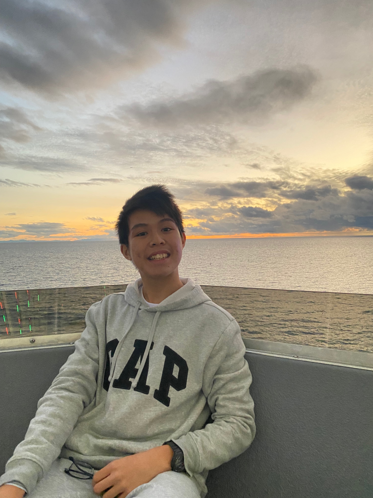
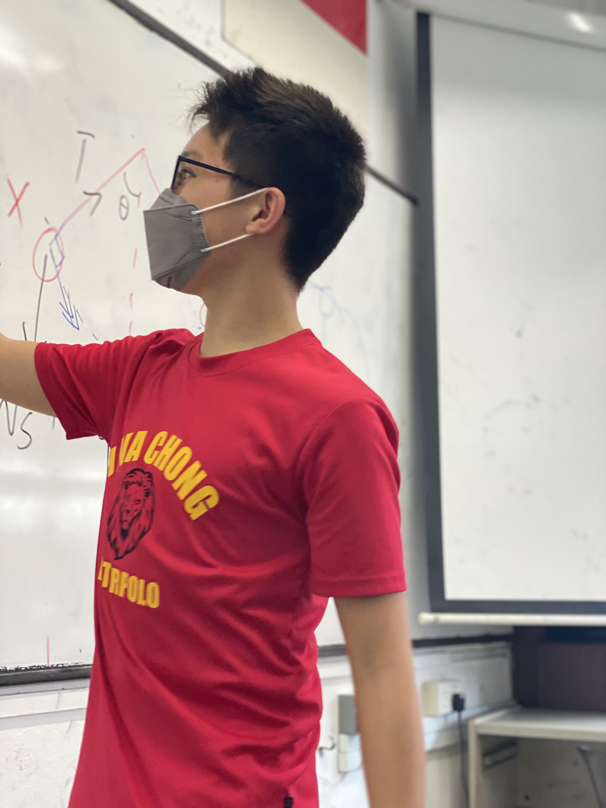

Zeaus Koh
Going from Zero to Hero | Building Cool Things | Creating a World Class Skillset | And a s***ton of Growth
Hello, I'm Zeaus. More about me here. I've embarked on a self-improvement journey since June 2023, I log in my progress and learnings all on this website. I've made progress, but as I've learnt, it'll never be enough. And so now I'm spending most of my time and energies tearing down old parts of myself and limiting beliefs, setting North Stars and building good habits and systems to get there, as well as thinking and reflecting on growth. I sometimes write/ponder/cogitate on this part of my website so if you'd like to hit me up for a discussion, I'll be down (provided you are interesting enough and have good points to offer). I also have a couple of side projects I'm always working on, whenever I finish a milestone I'll upload it here. I've a long list of cool shit I've done and plan to do, I just don't update this site too often :( I have a bias for action, so you'll never find me in one place, I prefer to oscillate between a bunch of cool shit. I'm trying to create value, trying to find signals in a world of noise. Follow me along on my journey to greatness.
2 / 5

One of my better photos (I know)
3 / 5

@ Pacific Park in Santa Monica, LA, California
4 / 5

@ My favourite place: the sea
5 / 5

Working out some maths
❮
❯
Contact
Programmed this website by scratch. Blissfully painful experience but if you have comments, let me know.